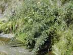
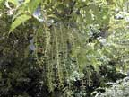
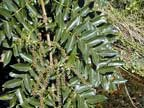
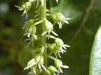
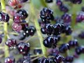
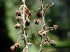
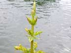
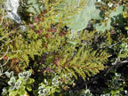

Tutu
Coriaria arborea and other species
Other names
Description
Native to NZ. Leaves are usually ovate with some species being lanceolate in shape. Flowers usually in axillary or terminal racemes with the fruit usually being black or purple in colour with enlarged surrounding petals. Forms asparagus like new shoots.
Similar plants
There are 11 species in NZ, but the commonest is C. arborea (pictured), most of the others grow in places where stock are unlikely to come across them.
Distribution
Throughout NZ. Often found in stony areas, eg river banks or on the margins of forests.
Toxin
The toxin, tutin, is a toxic lactone from the picrotoxin group. Once absorbed from the gut it localises in the CNS causing medullary excitatory poisoning. All parts of plant are poisonous except the petals surrounding the seeds and the roots. The toxin is in higher concentration in leaves than in stems. Young shoots and seeds have the highest concentrations. Bees collecting honey dew from tutu can give rise to a toxic metabolite, hyenanchin, in honey.
Species affected
Tutu is a classical poisoning plant of NZ with poisoning usually occurring in hungry or starved animals. Stock losses in 5 10% of beef herds in the South Island high country. Sheep poisonings sometimes reported. Horses are not attracted to tutu.
Clinical signs acute
Tutin has a picrotoxin like in effect and usually produces central nervous system signs. Tutin causes salivation, nausea, excitement, convulsions, coma and death. Sudden onset 24 48 hrs after ingestion. Cattle may exhibit a blind charging. Respiration rate is increased and so is the heart rate, with a significant rise in blood pressure. Muscle twitching soon becomes evident and severe. Extreme excitement including blind charging and eleptiform convulsions are seen. Ruminants become bloated and regurgitate ingesta. Terminal convulsions and death are the final outcome of most cases of tutu poisoning in livestock. In man, tutu poisoning which is non fatal may give rise to vomiting, incapacity to work and amnesia.
Clinical signs chronic
Post mortem signs
The main feature of the post mortem is the presence of undigested tutu leaves in the rumen. These are a valuable aid to a confirmed diagnosis.
Diagnosis
History of access to plant with clinical signs and finding the tutu leaves in the rumen.
Differential diagnosis
Treatment
Barbiturates which are antagonistic to tutin actions. This use may be impractical in livestock.
Prognosis
Generally poor.
Prevention
It is wise to ensure adequate supplementary feed is available
if tutu is present in paddocks, or animals which are hungry following
droving should not be allowed access to tutu. Most cases of poisoning
have been associated with hungry stock denied access to normal fodder.
References
Conner H.E. The Poisonous Plants In New Zealand. 1992. GP Publications Ltd, Wellington
Palmer Jones T. Poisonous honey overseas and in New Zealand. NZ Med J, 64: 631 637, 1965
Parton K, Bruere A.N. and Chambers J.P. Veterinary Clinical Toxicology, 2nd ed. 2001. Veterinary Continuing Education Publication No. 208
 |
 |
|
 |
 |
|
 |
 ripe seeds |
|
 |
 |
|